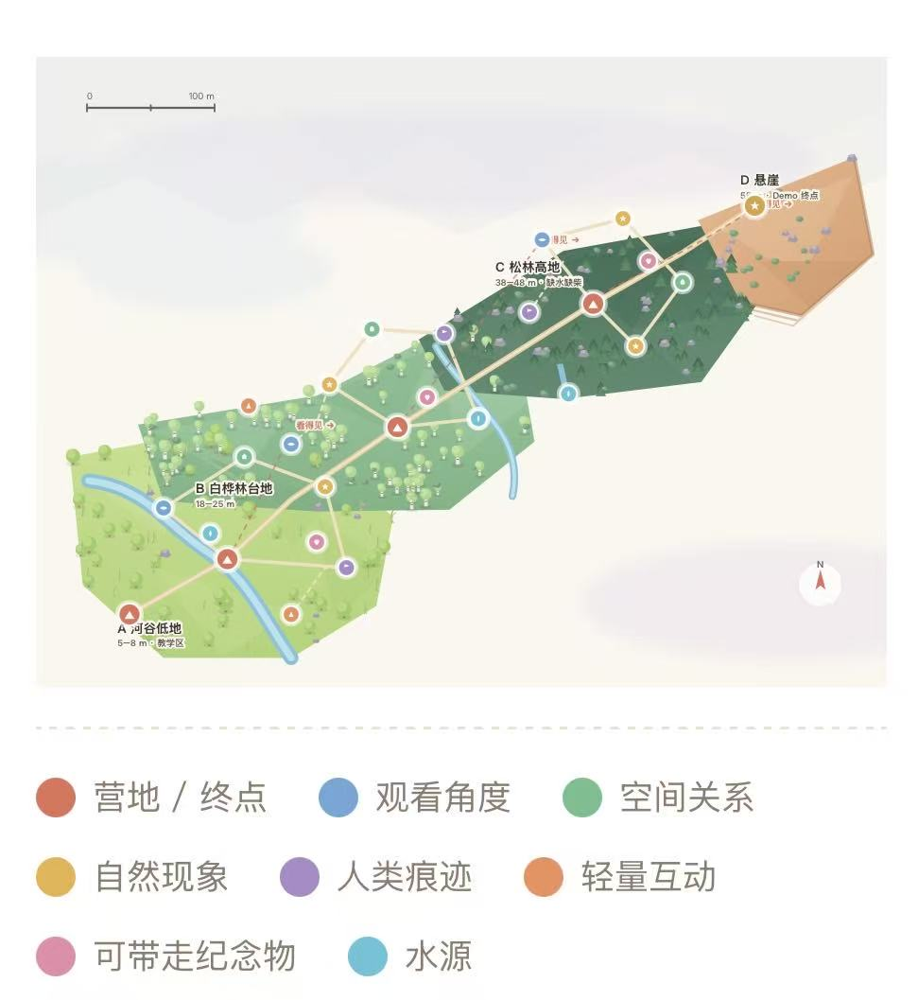
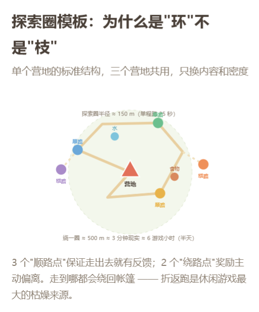
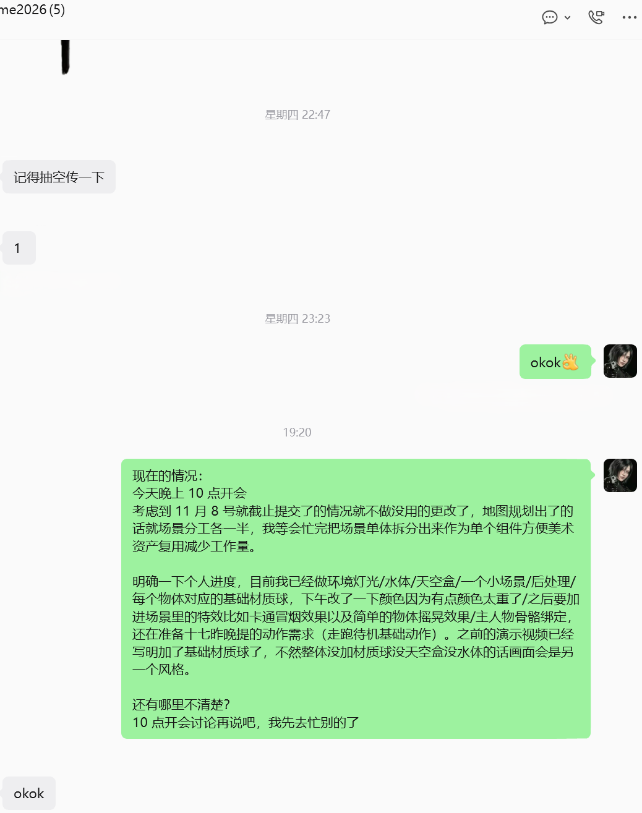
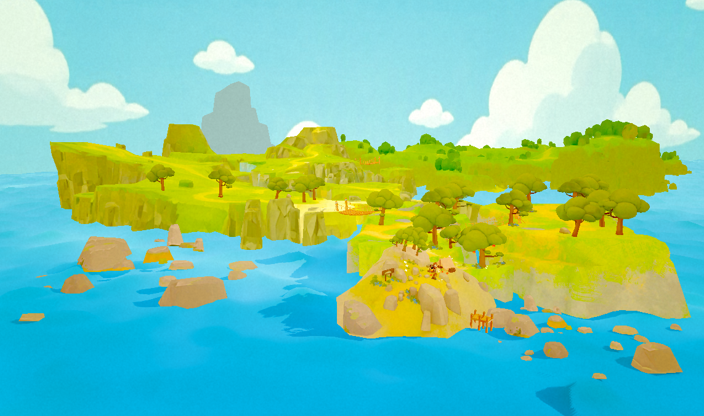
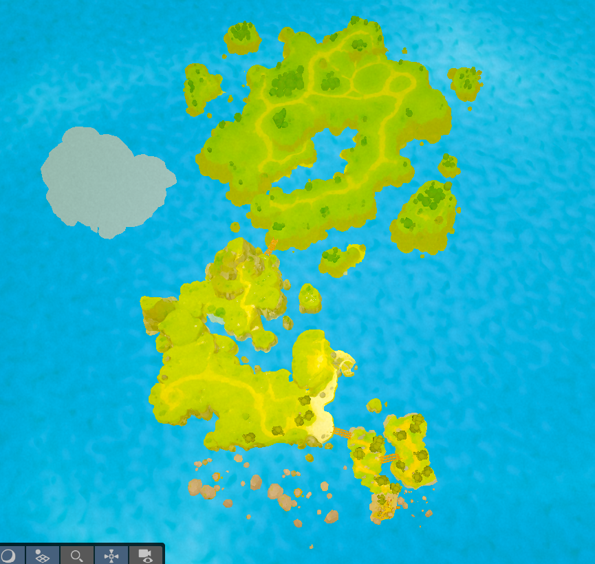
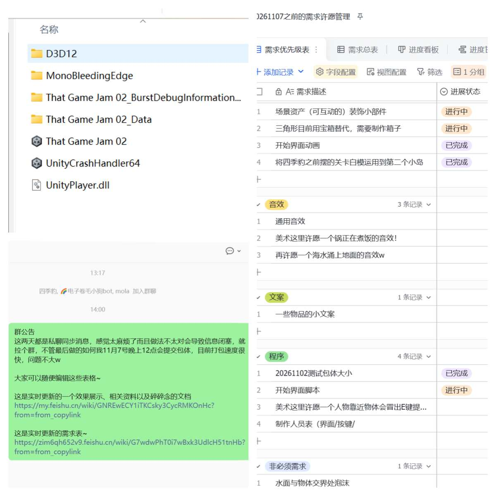
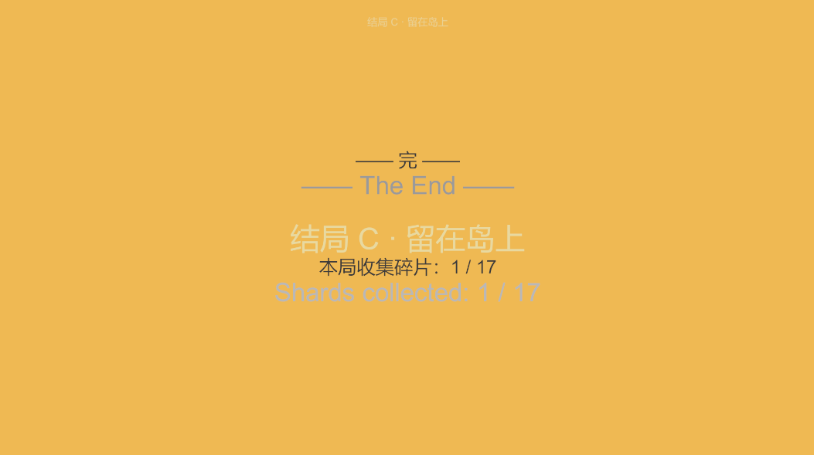
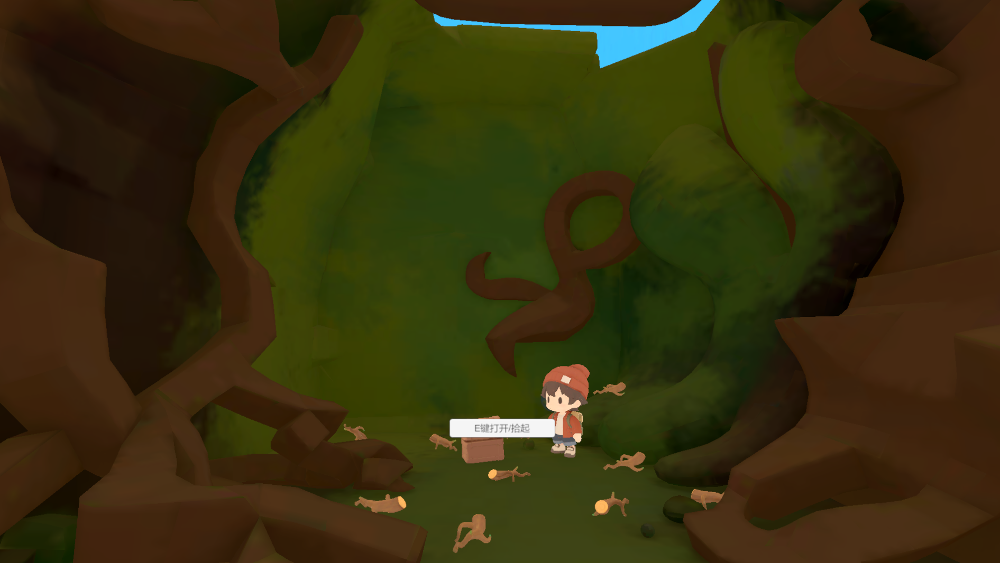

游戏简介
这是一款3D风格化卡通的休闲治愈养成游戏。玩家带着一只小狗在自然环境中旅行，沿途探索、获取食物、安排日常生活，并在合适的地方搭建临时营地。随着探索不断深入，会慢慢发现自己更想去、也更远的地方。
核心循环是「观察环境，选定一个想去的地方 → 准备食物与补给 → 外出探索、采集、发现新地点 → 回到营地做饭、休息、整理 → 修整之后，再往更远处或迁营出发」。
探索采用越走越高的珠链式地图结构，细节见下方地图设计。
小狗会帮忙搬运、寻找水源和食物、自主发现资源；你昏睡时它守在身边，饿昏后还会叼来果子把你唤醒。它是整段旅程中最主要的陪伴感来源。
背景故事
一位小小的旅人和他的小狗乘着一艘小木船出发，想去探索家乡附近的那座岛。可雨越下越大，一道闪电劈中了小船。等他们醒来时，已经搁浅在一座无名岛上。从这片小海滩望出去，还能看见原本要去的那座岛——但船已经坏了，海又太远、游不过去。既然暂时离不开了，一人一狗便开始一边等待救援，一边一点一点探索这座意料之外的小岛。
玩法与操作
用 WASD 在小岛上自由探索、用鼠标环顾四周。走到感兴趣的东西前按 E 互动：对话、拾取物品，看看小岛藏着什么。沿着小径走，找到你的小狗，把故事看到最后。一次轻松的完整流程大约 10～20 分钟。目前仅提供 PC（Windows）版，之后若有空会考虑补充 iOS 与 Android 版。
键位：WASD 移动 ｜ 鼠标 环顾视角 ｜ E 互动
团队缘起
《Paw&Trail》诞生于 2026 ThatGameJam。开赛一周后，原来的队伍散了，我们成了三个人——一名美术、一名音效、一名文案。我们在仅剩的地基上把一切重建起来，一起完成了这款小而治愈的冒险。老实说，这是我们一起做过的最开心的一次。过去，我们当中有人曾为一个项目提交失败而消沉了好几天；而这一次，哪怕最后一小时上传反复失败、倒计时走完游戏也没能提交上，感觉却完全不同了——我们只是笑了笑，继续做下去。
官网原文（English）
About the Game
A tiny traveler and their dog set off in a little wooden boat, hoping to explore the island near their hometown. But as the rain grew heavier, lightning struck their boat. When they woke up, they were stranded on a nameless island. From the small beach, they can still see the island they were heading for. But the boat is broken, and the sea is too far to swim. With no way to leave for now, the two begin to wait for rescue, and to explore this unexpected island, one discovery at a time.
The Team
Paw&Trail was made for 2026 ThatGameJam. One week in, our original team fell apart, we are a team of three: one artist, one sound designer, and one writer. We rebuilt everything on what was left, and finished this small cozy adventure together. Honestly, it was the most fun any of us has had making a game. One of us once spent days recovering from a failed submission on a past project. This time, even when the upload kept failing in the final hour and the clock ran out before the game got in, the feeling was completely different: we just laughed and kept going.
So here it is: our game, live and playable. We hope you enjoy this little island as much as we enjoyed building it.
How to play
Explore the island freely with WASD and look around with the mouse. Walk up to things that catch your eye and press E to interact: talk, pick things up, and see what the island hides. Follow the trail, find your dog, and see the story through to its end. A single relaxed playthrough takes about 10 to 20 minutes.
Currently available for PC (Windows) only. We may add iOS and Android versions later if we find the time.
Controls
WASD: move ｜ Mouse: look around ｜ E: interact
项目职责 · 我的工作
这个项目到最后，除了音效音乐与一部分文案，其余几乎全部由我一人完成 ——从 3D 美术与视觉全流程、技术美术与渲染、角色绑定与动画、场景地编，到交互脚本与程序、玩法与叙事文案，再到策划统筹与打包交付。具体如下：
一、渲染管线与技术美术（TA）全流程搭建
入队初期主动提出采用 URP 渲染管线 的技术方案，适配卡通风格开发需求，从技术选型层面保障后续美术流程顺畅。
从 0 搭建整套卡通风格渲染体系 ：环境光照、水体效果、动态天空盒、卡通后处理参数，统一全场景基础材质球；主动校准偏重的色彩倾向，实现柔和治愈的统一画面调性。自主实现场景动态氛围效果：卡通风格粒子冒烟特效、自然物体轻微晃动动画 ，补全假光照烘焙效果，在保证移动端流畅运行的前提下兼顾画面表现力。
开发美术自动化提效工具：借助 AI 辅助编写 一键批处理自动化工具 ，支持批量拆分模型、坐标自动归零、按规范自动重命名、批量导出 FBX；导出时配置为直接覆盖 Unity 内旧资源且不修改 .meta 文件，保证已调好的材质与参数引用不被重置；内置预览模式，导出前可预览选中模型列表。这套工具把手动导出、调参的重复工作 从数十分钟压缩到数秒 ，大幅提升场景迭代效率。
主动修正贴图导出分辨率错误，重新上传高分辨率版本资源，适配 Unity 6000 版本工程规范，保障跨版本资源一致性。
借助 AI 辅助编写多段引擎内功能脚本：动态天空盒转动（编辑器内亦可预览）、人物基础操控、动画状态机与动画操控 ，让场景与角色能在引擎里实际跑起来。
二、角色资产与动画制作
独立制作 主角与陪伴宠物（小狗）的角色模型、贴图与材质 ，从建模、贴图到底色全部由我完成。
完成主角模型的 骨骼绑定 ，为角色挂载背包等随身道具子节点，支撑道具随动作自然联动。
完成 待机、走路、跑步、跳跃、躺、坐、起身 等整套基础动作，并自行搭建 动画状态机 驱动动作切换，10月31日当天接到需求、当天交付。
预留 通用动作智能绑定 方案，其余动作可一次性复用到团队其他角色，省去重复绑定。
设计 开始界面的开场镜头与 UI ：小小人坐在篝火旁发呆、小锅煮饭冒烟的循环动画，配「开始旅行 / 退出」按钮 → 起身镜头与 loading 过场；复用自己写过的鼠标交互脚本与点击发光材质球，并在开始界面为全队成员保留制作人员表。
三、场景资产与地编工作
独立完成 核心演示小场景的全流程搭建 ：自然地形、营地全套道具（帐篷、篝火、炊具、背包、野果）、植被山石等全套原创模型资产。
将场景单体资产拆分为标准化可复用预制体，建立资产复用规范，为后续场景快速搭建 节省约 40% 的重复工作量 。
在上游关卡方案缺失的情况下，主动调研同类休闲治愈游戏，输出 珠链式全局旅行路线俯图与点位标注图 ，作为团队统一的地图设计参考。
为场景物体与人物统一配置 碰撞体 ，保证角色移动、交互与碰撞在引擎内正常运转。
用「倒下的树 + 碰撞体 」实现地图空气墙边界，以自然遮挡代替生硬隔断，让场景边缘过渡更自然。
四、协作流程搭建与跨职能补位
入队第一天主动推动搭建 Git 工程仓库 ，跟进分支合并与资源上传规范，推动版本管理 从 0 落地 。
全程在公开群内同步进度、技术选型与交付边界，做完整过程留痕，降低跨时区协作信息差、减少返工风险。
跨时区对接新加入的技术美术，主动建立联系、对齐资产标准与分工边界；在美术方向未完全锁定的情况下，优先完成核心内容的可运行 Demo。
主动确认场景必做元素清单，避免漏项返工；基于短周期约束提出 「精简组件、不做冗余变体」 的排期建议，帮助团队控制工作量。
给文案同学同步场景进度与地图参考，支撑叙事内容开展；为演示视频补充材质说明，避免裸资源造成的画面风格误解。
面向主策同步基础技术常识（手绘模型 / PBR / 烘焙 / 引擎版本差异），降低跨角色沟通的信息成本。
五、策划统筹与项目兜底
在策划侧迟迟拿不出统一方案、信息主要靠各自私聊传递的时候，主动整理一份面向 TA、文案、音效的统筹文档 ，补上分工、进度与范围裁剪，并逐个对接对齐。
主动做 范围裁剪与岗位搭补 ：把「只开放前面地区、其余用空气墙隔开」「交互逻辑可交由 TA 分担」这类排期与协作建议直接落地。
面对临交稿上游方向仍不稳定，主动在自己的基础场景上准备一版 可直接打包的休闲玩法 作为兜底，并已独立完成 打包与包体检查 、负责最终提交，保证项目无论如何都能按时交出一个能运行的 Demo。
在上游发起者中途退出、核心成员陆续不稳的情况下，本人没有散伙，而是重新把剩余成员召集起来，优先保住可交付的基本内容，再把自己想要做出来的目标内容做完，并梳理现状、拉需求与分工、逐个同步，把队伍重新凝聚成一支能独立推进的交付小队。
在策划侧缺位时，我主动补齐各收集点的玩法闭环设计（比如树洞穿梭 → 收集树枝 → 搭梯子返回 → 宝箱奖励），把镜头、交互键位、流程节奏都落到可执行的程度，并最终由我一人独立完成落地。
主动备份个人美术与脚本资产，做好版本保全，规避项目不确定带来的产出丢失风险。
六、叙事与文案创作
除了美术与程序，叙事文案我也担起了相当一部分：自己写了游戏开场触发的两个故事、三个故事结局线及其分支、贯穿全篇的旁白与心理描写、手账记录文字，以及重要道具互动文案和约一半的物品互动对话文本（其余由文案同学完成）。
初版引擎地图布局
暂定是以下地图方案，之后我会基于这一版做场景调试，我出原型之后根据大家测试DEMO的感觉更改模型排布。整体是一条约600米见方的珠链主径，串起3处落脚点，从河谷一路爬升到悬崖。每个营地各带一个5到7个探索点的环形探索圈，站在这处营地就能看见下一个目标，这也是迁营的主要动机。
整体大但相对空旷，减少非必要工作量，垂直方向就是叙事方向，越走越高，终点是整张地图的最高点。
单个营地的探索圈半径约150米，绕一圈约500米。圈内放3个顺路点保证走出去就有反馈，再放2个绕路点奖励主动偏离，走到哪都会绕回帐篷，避免来回折返的枯燥。每一次迁营都是一次明确的上坡。
区域 水源 食物 柴火 离开动机
A 河谷低地 河，约30米 浆果×8，密集 充足 浆果采完，北坡能看见白桦林 B 白桦林台地 溪或潭，约60米 蘑菇×5，少量浆果 中等 林中夜里太暗，能看见岩脊孤松 C 松林高地 山泉，约120米 蓝莓×4，分散 几乎没有 什么都缺，但已能看见悬崖 D 悬崖 无 无 无 终点，坐下看云海
因为不提供地图界面，认路主要靠几层线索，每区一个剪影独特的视线锚点（白桦白线、岩脊孤松、橙色断层），主径与支线的小径语言，随距离衰减的水声和高地风声，小鸟群提示资源点，以及小狗抽动鼻子、转向、回头看你。地图不用空气墙，陡坡会让人下滑，密灌木钻不过去，深水走到腰深会被推回，边缘用山体和浓雾渐隐。
收集点玩法设计（树洞收集点）
在收集点的具体玩法上，我也补齐了可执行的交互闭环：以第二座岛上的一个三角形收集点为例，主角走到位置会发现一处树洞，钻进树洞跌入地下空间，找到收集物后需要捡起散落的树枝、用树枝搭一把梯子才能爬回地面。整个过程固定在俯视（微斜）镜头下完成，交互统一用 E 键（捡树枝 / 搭梯子 / 攀爬），先以无动画的方式跑通功能、再逐步补表现，地下空间中再放一个宝箱作为收集奖励。目前还在确认 UI 字体风格（治愈可爱 / 常规）与开箱后的叙事文案走向。
制作思路
项目围绕2026 ThatGameJam主办方给出的音乐旋律展开创作，因此在2026年10月26日出题后启动。团队最初就想着让音乐成为叙事主线，随进程变化，并提出了出生发现、世界苏醒、生命汇聚、隐匿扩散的四段式情感结构。
采用风格化类似低多边形的卡通与温暖治愈的绘本感配色，让整段旅程看起来轻松、柔和，相对来说考验的是shader的风格化表现效果。
以规划能力的成长作为核心成长来源，难度适中，压力贴合一次轻松旅行的定位，整体类似《Big Walk》这类澳大利亚旅行游戏轻松愉快的感觉。
一人一狗之间的陪伴感，是主线探索之外最想传递的情绪。
团队最早还讨论过一个语音交互的想法，发起者想将通过语音和小狗交互作为主玩法，让玩家像现实里那样教小狗做事、下达指令、让它帮忙做事情，目前仍在评估是否纳入正式玩法。
游戏内的时间按完整的24小时运行，昼夜与场景明暗随这24小时自然变化，现实与游戏的时间换算尚未确定，我之后会在测试时根据地图路线和实际游玩节奏调整。
制作分工
项目于2026年11月02日正式启动。赛前团队原计划5人，一名3D成员在开赛前一天退出，开赛后实际为本人、发起者（挂名策划+程序）、音乐音效、文案共4人，3D方向的全部工作因此落在本人一个人身上。本人承担所有与视觉美学相关的工作，包括引擎与渲染表现、全部3D美术（角色、场景、地编、绑定、动画、贴图、Shader、后处理）、关卡设计与地图布局设计，以及2D概念图、UI，并负责整体美术方案与艺术风格的确定。项目原型已结项，目前项目命运未知。合作层面，本人不止跟发起者对接，根据项目需要也会跟文案、音效对接。
发起者虽然挂着策划+程序的头衔，但实际未承担核心玩法逻辑的代码实现，也没有搭建游戏的基础架构与逻辑闭环。本人完成的美术资产（场景、角色、动画、UI）他甚至无法在引擎内正确调用与组合，导致美术产出无法自然进入游戏流程，最终不得不由我自己写交互脚本（天空盒转动、人物操控、动画触发等）来把资产串起来。Unity 仓库搭建、版本管理等程序侧基础条件也迟迟未定，同样是本人入队第一天主动推动 Git 落地。事实上，从头到尾真正在推进的一直是发起者之外的 3 人——本人、文案、音效；也曾当面问过发起者具体在做什么，对方只是回避这个话题，始终没能给出实质产出。
项目属于学生阶段的小体量合作，大家预算都有限，所以从没请过外包，实在忙不过来时顶多再拉一个人进来合作。10月28日晚上，团队曾拉入一位 TA（四季豹，与本人同期毕业，现居美国，属跨时区协作），原计划分担场景资产的摆放与复用；但对方实际一直没空真正参与，只在早期零星搭过白模，核心的 3D 资产制作、引擎与渲染效果始终由本人承担，直到 2026 年 11 月 5 日才正式明确退出。
2026年10月30日，原发起者放弃制作。本人查看其留下的分支后，发现只有用 GPT 生成的 AI 游戏，既没有搭建任何架构，也没有对应脚本，无法继续合作。2026 年 11 月 5 日，TA 四季豹也正式明确没空参与，队伍最终确定为核心 3 人：本人（全栈——3D 美术 / 技术美术 / 地编 / 绑定动画 / 交互脚本 / 叙事文案 / 项目统筹兜底）、电子狗（文案——叙事与对话文本，与本人各担一半）、三金（音效——音乐与音效）。也就是说，从开赛到发布，真正从头到尾稳定推进的始终是这 3 人。由于上游策划与程序长期缺位，本人在推进美术全流程的同时，也主动补起了需求管理、进度同步、范围裁剪、分工对齐与统筹文档整理，独立完成打包与最终提交，把队伍重新拉回到同一页上。
初版概念图
这6张初版概念图是我在2026年10月26日自己出的，用于引擎原型场景的快速搭建与布局参考，之后会结合大量现实中野外旅行的地点来制作场景与触发事件。
Demo 实机截图（2026.11.08）
Demo 打包后的实机运行画面与引擎内场景效果。
开发杂记 · 2026年10月29日早晨
原本这个Unity我已经用2021.3.45f1搓了个带转动的自制晴天天空盒，卡通水体但还没做细节，后处理画面、对应的简单shader、策划要求的物品人物狗狗场景都有了。风效已经做好，但我还没挂在物体上。天空盒的白云因为后处理效果变得不白了，我也要把颜色改成白的，会更卡通一点。
这是10月28日的一人一狗小场景展示
2026年10月29日根据策划的要求把Unity换成高版本6000.3.27f1。他终于建仓了（哭了，终于等到这一天，还以为他不建了）。
2026年10月28日深夜，策划拉了个TA妹妹来帮我打杂，但我目前还没想好要给她派什么任务。大概会给她能胜任的中间旅行区域，以及部分后面区域的场景建模。我回家还得列需求表才行，感觉不像美术侧该干的事。原本我打算根据策划的想法定制四个探险区域，2026年10月27日已经给策划出了一版地图设计。
我出的一版地图设计

地图探索小圈示意

2026年10月28日深夜，文案老师询问这个地图整个的规划，我暂时用27号出的地图设计供她写关联事件的故事。
现在已经是2026年10月29日早上了，第一块区域已经ok。人物和狗狗如果不需要改动，就已经可以用现在这一版有基本绑定动作的模型。反正也不是正式的商业项目，仔细想想现在所有工作量如果要按正式项目来做，是要打磨一年的。
哎，主要是昨天深夜策划又想改整个探险地块的风格，改成中式公园那种。他给了两个参考视频，一个是杭州九溪，一个是天目山，我还没看完，但看地名大概知道长什么样，毕竟这些地方以前在国美的时候去过，有照片还大致记得。
杭州九溪
天目山
由于这个旅行游戏有触发事件以及回忆，我可能还得列出需要做的卡通特效、触发前和触发后的变化。对了还要给模型加碰撞体，动画状态机也还没连。算了晚上再整吧，现在先写到这里。
开发杂记 · 2026年10月31日周六
一、进度
进入开发第二周，离11月8日截止越来越近。这一天的重心，是把场景从“能用”推进到“能复用、能分工”。当天我这边完成的产出有：
环境灯光、水体、天空盒、后处理，以及一个营地场景一个小山一个小河谷
每个物体对应的基础材质球
下午又调了一版颜色和水体密度，调完水体后做了座小山
完成主人物骨骼绑定，以及待机、走路、跑步三套基础动作——10月31日当天接到动画需求、当天就交付。
待机动画 · 当天提需求、当天交付
走路动画 · 当天提需求、当天交付
跑步动画 · 当天提需求、当天交付
二、协作与复用
另一位28号晚上新加进来的TA今早已经把她负责地图的白模搭好了，接下来主要是场景的摆放与复用。为了配合，当天我把原本合并在一起的场景按物体拆成独立组件。这一点其实是对方提醒我的：模型和贴图本身没问题，但之前为了赶工把场景合并成了一组、没有拆成可复用组件，导致她没法直接拿去摆。赶工时没留拆分的余量、也没及时意识到这次有另一位美术能分担，是这周记下的一个改进点。当晚我一开始是手工逐个拆，拆到一半发现量太大——整个营地几十个单体——干脆写了段批量导出脚本，把组件统一归位到零点、一次性导出成 FBX，只需两三分钟就全部出完，后面她拖进 Unity 搭起来就快了。
三、场景氛围与雾效
我在做场景氛围的时候还冒出几个小想法：煮饭时的卡通冒烟、物体的轻微摇晃这类轻量特效，等拆分完成后再补进去。
昨晚的场景截图做了个雾效对比，一共三种：一张没加雾效，另外两张加了雾效。加了雾、再带点颜色会显得比较梦幻；不加的话，海和天空那条交界线看着偏硬。不过现在回头再看截图，又觉得不加也没那么奇怪，两种其实都行。先都留着，过几天再看说不定又有新感觉。
2026年10月31日早 · 雾效对比
四、项目复盘
这次协作里，有几个本不该由执行者承受、却实实在在拖缓了进度的问题，值得如实记下。其一是美术风格反复：26号我就整理好了参考文档，参考图也挑好、确定下来并同步给了发起者，结果临近提交又被推翻重来，需求一直在摇摆，做完的东西只能跟着返工；其二是需求边界迟迟没有收敛，地图设计、观察点、整张地图走向这类本应由策划牵头敲定的内容，最后也压到了美术侧。
需求节奏也明显错位：动画相关的需求拖到10月31日凌晨2点半，才用AI总结的形式丢了过来，同一天晚上10点就反过来追进度；提过再拉一位分担美术，进来的TA实际只能帮摆场景，建模、材质、动画这些核心量还是我一个人扛。更关键的是，项目越往后，拍板决策的职责慢慢落到了我头上，本应由发起者定夺的方向和取舍，最后都堆到了执行侧。
分工信息也被反复确认：即便事先已经把各自能做的事和分工清单发过一遍，临到节点还是会被发起者反复追问“哪些归谁、是不是都得你来做”，甚至临近交稿，仍有成员连策划案和策划是谁都不清楚——信息同步始终没能自上而下落到每个人头上。
最棘手的是核心玩法的方向反复：临近交稿，本来做着的徒步玩法被临时推翻、改向解密方向，可地图草图始终没定下来，前期做完的场景、白模和文案叙事都面临重新评估甚至返工。
版本选择上同样有硬伤：放着多数成员本地已有的稳定版本不用，被改成一个全员都没装过的新版本，逼着所有人重新下载配置环境，本可避免的兼容风险与时间成本就这样被放大了。
面对这些不确定性，我这边同步准备了兜底方案——在自己的基础场景上直接搭出一版可打包的休闲玩法，保证无论上游方向怎么变、进度怎么拖，到交稿时至少能交出一个可以运行的 Demo。
下面留了几张当天的画面和进度记录。
线上合作沟通记录 · 当天的进度说明

发完进度后 · 又把水体密度及场景雾效调了一下
这张里没有前面的那条道路。前面雾效对比那三张是有路的，但这条路现在的走向看着太割裂了，我想再改一版先不把它放进场景。
我这边分支里的场景地形进度


开发杂记 · 2026年11月2日周一
交稿前的最后一周，沟通从之前零散私聊收敛为群内统一同步。当天我在群里明确了 11月7日晚上的交包节点 ，并附上实时更新的飞书需求管理表与效果展示文档，把散落的需求、进度归拢到一张表里，方便全队对着同一份清单推进。
包体这边也已经打成：下方截图左侧是当天打出的 Unity 输出目录——可执行文件、数据目录、UnityPlayer.dll 等一应俱全，说明 Demo 已经能完整跑起来，打包速度稳定在可接受的范围。
右侧是飞书需求管理表：需求按「场景资产 / 音效 / 文案 / 程序 / 非必须需求」分组建档，进度逐条标注「已完成 / 进行中 / 未开始」——开始界面动画、白模进二岛这些已经勾掉，剩下的场景装饰、宝箱造型、按键提示与制作人员表等，都在同一张表里实时更新，做到哪一步一目了然。
11月2日引擎内测试演示 · 走跑跳切换 / 宝箱落位 / 白模穿模与碰撞体
视频里同步做了一遍可交互点位的全流程走查：所有计划放置宝箱的三角形标记位都跑了一遍，并把 TA（四季豹）之前搭的白模摆进场景核对位置——白模目前是临时贴图、未挂碰撞体，所以会穿模，已经在需求表里标注待补；同时给每个小岛周边都加上了碰撞体，保证角色不会走出地图边界掉进海里。后续迭代方向：人物在场景里的比例需要放大，周围再补一些装饰。交互脚本这部分，TA 与程序都不太想接，就由我自己写。
2026年11月2日 · 群内统一同步 / 交包节点 / 需求管理表 / 打包输出

11月2日实机 · C结局 与 树洞支线故事

C 结局 · 最终画面

实机 · 树洞支线故事
开发杂记 · 2026年11月3日周二
对项目做了一轮全面瘦身：把不再使用的测试资源、临时材质、废弃 prefab 全部清掉，包体干净了不少。清理完成后重新打包，整轮构建约两分钟 ，输出的可执行文件正常启动、场景能完整跑通，所有之前打的碰撞体、走跑跳动画、天空盒转动等效果都正常。到这一步，Demo 的稳定版本已经可以随时交付。
（开发杂记到这里暂时中断——11 月 3 日至 5 日我因生病和杂事几乎没推进游戏开发，只抽空做了一点用不了几分钟的小事，实在没内容可记，日志就此断更；后续有空再往下细细补记。）
技术开发
核心玩法与交互程序由我补位完成——脚本用 AI 辅助编写、再自己调试落地。下面挑几个在 Unity（URP）里有代表性的技术实现：
E 键交互仲裁（EArbiter）
场景里有几十个可交互资产、几百句对话、近十个小故事（宝箱、树枝、钓鱼、篝火、手帐收集点…）各自检测 E 键，玩家站在两个交互物重叠处按一次 E，会多个脚本同帧各响各的，导致对话重合、抢提示框、该开宝箱却弹出树枝。于是把各检测点统一改成只向一个全局静态类「报名」：EArbiter.Request(距离, 动作)。它内部用一个 DontDestroyOnLoad 的迷你 Driver 在 LateUpdate 里挑离玩家最近的一个执行、其余静默——LateUpdate 天然晚于同帧所有 Update，报名收齐后再判定，完全不用管脚本执行顺序；执行动作再用 try/catch 兜底防崩。这套机制配合 PickupItem（拾取）、DialogTrigger（对话）等，让几十个交互点既不冲突、也好扩展。
天空盒旋转（SkyboxRotator）
通过天空盒材质的 _Rotation 属性每帧旋转，让天空缓缓转动。为同时支持「编辑器里不点 Play 也能预览」和「运行时干净不污染资产」，做了两套处理：运行时克隆一份材质（HideAndDontSave）来改、退出自动回收；编辑器里直接改原材质、停用组件时还原角度——专门解决上一版在 Domain Reload 时临时材质被销毁、天空盒变黑的问题。另外给 UI 滑条暴露了 SetNormalized / GetAutoRotate 接口，方便做亮度、时段之类的联动。
输入与角色控制（InputHub + ThirdPersonController）
双轨输入兼容 ：封装了一个 InputHub 静态层，用 #if ENABLE_INPUT_SYSTEM 分支同时兼容旧 Input Manager 和新 Input System——工程开「纯新 Input System」时，老 API 的 Input.GetKeyDown 会直接抛异常，所以所有交互键（E / L / 空格 / C 拍照 / J 手帐 / 方向键翻目录等）都手动做了 KeyCode→Key 映射统一走这里，不必再去 Project Settings 改 Active Input Handling。第三人称移动 ：以相机前方为基准压平到水平面求移动方向，速度用 MoveTowards 平滑加减速；转身用 1 - exp(-turnSpeed·Δt) 做帧率无关的 Slerp，高帧率下也不会转出鬼畜。出生自检 + 掉落救援 ：启动时向上打射线自动把人「顶」出被抬高的地表（收集自身碰撞盒做过滤）、向下 500m 打射线确认脚下有地面（没有就报错提示加 MeshCollider）；运行时一旦掉到出生点下方 25m，自动送回出生点并打日志给线索。这套「自检 + 兜底」让赶工期的场景地编敢频繁改动地面而不怕埋坑。
小狗 AI 与程序化动画（DogFollow）
BOSS 锁定式跟随 ：狗的跟随参数在运行时强制收紧——停止距离压到 0.7m（贴脚跟）、跑步 3m、瞬移 10m，速度随距离正比增长（越远越快、上限 1.6 倍防一帧瞬移半张图），保证狗永远贴身、绝不掉队。程序化小跑动画 ：没做正式动画也能动——移动时身体上下颠（用 |sin| 模拟「蹬地—落地」节奏而非正弦漂浮）+ 轻微前倾，并自动在所有子物体里找名字带 leg / paw / foot 的骨骼做交替摆动（简化版对角步态）。体型锁 + 卡死脱困 ：启动时缓存自身与全部子物体的缩放、LateUpdate 锁回原值，根治 FBX 导入时偷偷带出来的 Animator 缩放骨骼、把狗越跑越大的问题；并自动禁用模型自带 Animator/Rigidbody/NavMeshAgent 避免和跟随逻辑打架。若狗「明明在走却 2.5 秒没挪窝」（被卡住），直接瞬移到主角身边脱困。
卡通渲染与后处理
用 ShaderGraph 搭了水、桥、苹果、透明四套材质（覆盖水体波动、透明遮挡等效果），再用 URP 后处理资产统一卡通画面的整体色调与氛围，配合烘培光照，保证整场观感柔和治愈、风格统一。
剧情演出系统（开场 / 进场 / 结局 + 双语）
运行时纯代码搭 UI ：开场、进场、结局三套剧情都用纯代码在运行时搭全屏 UI（Canvas + 排序 9999 + DontDestroyOnLoad），打字机逐字出字、按 E/空格/点击推进、打字中按一下补全整句；每句台词用「中文|英文」双行存，Split 后把英文缩成灰色小字缀在中文下方，一套数据同时服务双语。草图动画插画 ：剧情句子可挂循环 mp4（VideoPlayer 渲染到 RenderTexture 再喂给 RawImage），配合 AspectRatioFitter 等比适配；没视频的句子回退静态概念图或纯文字。三结局判定 ：结局按本局收集的「碎片数」判定——≥8 被救 / 3~7 再等一个季节 / 0~2 留在岛上，落款页展示结局名与碎片成绩；触发距离用 renderer.bounds.ClosestPoint 而非锚点坐标（Max 导出的 FBX 缩放可达 191、锚点会被推离视觉模型几十米，用锚点测距玩家走到跟前也够不着）。切场景时序 ：放完必须先拆掉被 DontDestroyOnLoad 保护的 UI 再 LoadScene——否则「切完再拆」的代码永远执行不到，完结界面会钉死在屏幕上。
玩法系统与编辑器工具链
钓鱼 / 睡袋 / 拾取 ：钓鱼点抛竿后随机等待咬钩、再开一个 3 秒限时窗口按 E 才算钓到、鱼随机进背包并双语播报；睡袋做睡觉/起身、PickupItem 拾取并入包。背包栏 ：InventoryBar 运行时自动生成 12 格（格子、图标、文字全代码搭），同名物品自动合并成「木头 x3」；有图标就显示图标 + 右下角数量角标、没图标就中英两行显示名字，字体优先取系统微软雅黑。手帐系统 ：JournalSystem / JournalUI 做拍照、目录、贴纸收集，用「静态内存 + 一局一命」的设计和零场景污染的运行时接线（详见《手帐系统说明》）。Editor 工具链 ：为加速铺量写了一批一键菜单——「一键配开场剧情」会自动关掉任意键开始/清按钮监听、自动挂爪子光标、按关键词把概念图和草图动画配到对应台词并做数组对齐防越界；「一键加结局」自动绑触发点；还有把对话表批量挂到 75+ 个物体、Loading 队伍生成、AudioListener 修复等，并整理了一份《脚本速查》标注每个脚本挂哪、填什么、以及 InteractWithE 与 DialogTrigger 的冲突规避方式。
这些脚本连同打包输出（场景列表加全的 exe + _Data + UnityPlayer.dll）已随 Demo 交付，游戏现上线 itch.io（Paw&Trail） ，可免费游玩。
返回小游戏列表